Оглавление
Основная часть
Где остановиться?
Я жил в уютненьком номере в апартаментах “Гаяз”. Номер чистый, удобный, красивый, светлый. Из плюсов для интровертов могу выделить бесконтактное заселение (вам вышлют инструкцию по заселению). Весь доступ к номеру и территории осуществляется с помощью PIN кодов от замков, что как показала практика, намного лучше чем карты или что-то подобное. Менеджер работает с 7АМ до 11РМ
Расположение очень удобное - минут 7 пешком до набережной *оз. Нижний кабан, столько же до очень красивой [пешеходной ул. Баумана](https://maps.app.goo.gl/1wf7VAvq2ERyUeLB8),* минут 10-15 до Кремля, а также до вокзала Казань-1.
Из явных минусов хотел бы отметить что WiFi как бы есть, но работает он крайне плохо. Небольшой лайфхак если будете туда заселяться: утюг, пылесос и гладильную доску можно найти в шкафу на этаже в коридоре (по крайней мере на 1 этаже это так).
В общем и целом, место классное, буду останавливаться там в следующий раз, всем рекомендую.
А когда кушоц?
В целом поесть можно в Доброй Столовой или в Маке, тут уж на любителя. Скажу лишь что в первом варианте вы выигрываете возможность попить обалденный прохладный морс)
Что посмотреть?
Кремль


Казанский Кремль - очень красивое и старинное сооружение, мне оно очень понравилось тем, что в отличае от Московского он не в идеальном состоянии, что является его изюминкой.
📍Геолокация
Набережная озера Нижний Кабан


Вечером на набережной очень красиво наблюдать за фонтанами, а также иллюминациями зданий, отражающихся в воде. А днём это место стоит посетить ради того чтобы посмотреть на лягушек и уточек. Набаржная отлично благоустраена, но к сожалению не до конца - на противоположном берегу от театра им. Камала ведутся строительный работы, связанные с посмтрокой дома почти вплотную к набережной.
📍Геолокация
Иннополис


И всё-же несмотря на то, что часть туристов хотят попасть в Иннополис, скажу вам правду - там скучно. Это город в котором нет ничего кроме университета, общежития, жилых кварталов, кафе и бара, пятёрочки и школы с детским садом. Всё. Ну и скверик еще 😁. 40-50 минут за глаза хватит чтобы обойти весь город и посмотреть его. Из инетресного - роверы, ну милашки же)
Насчёт транспорта он здесь ходит гораздо чаще чем написано на сайте иннополиса пости каждый час, актуалное расписание можно узнать на остановках. Из прикольных опций - бесплатное беспилотное такси в перделах города, на котором, к сожалению, я так и не покатался.
Пешеходная улица им. Баумана

 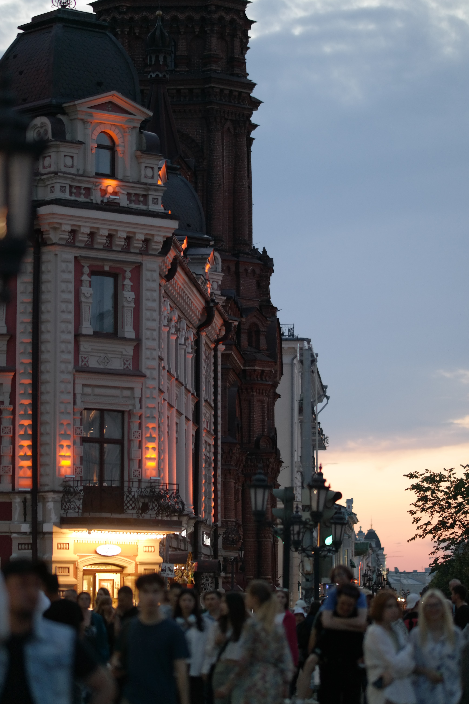
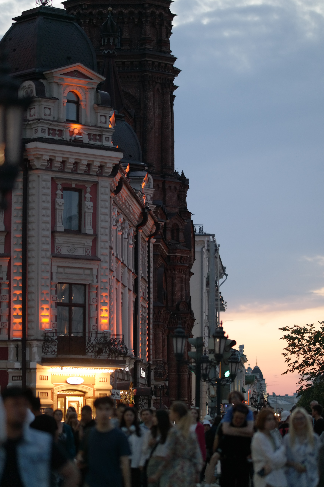
Распологается пешеходня улица в 3х минутах ходьбы от Кремля. На улице очень много музыкантов и очень классно, что местные заведения поддерживат их, давая электричество. Из явных минусов я бы хотел выделить потсоянную стройку не только здесь, но и в целом в Казани. На улице можно найти много магазинов с сувенирами, а также кафе и ресторанов.
📍Геолокация
Кремлёвская набережная

 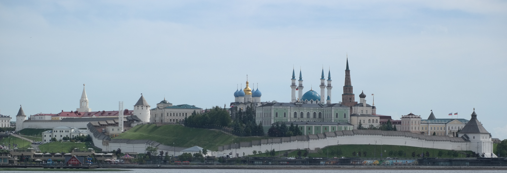
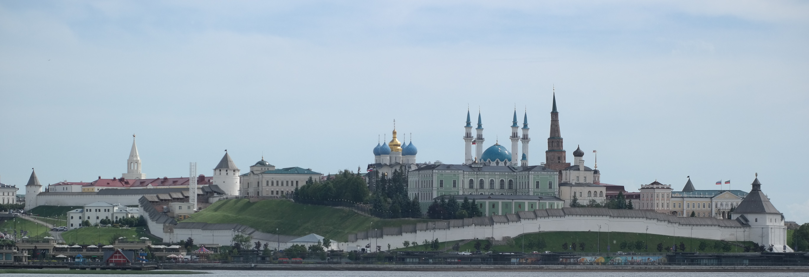

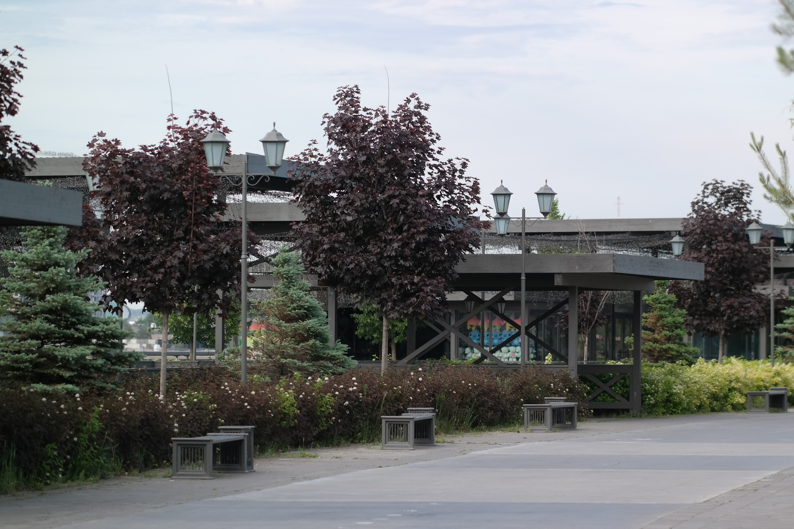 
Рекомендую прогуляться по набережной от Казана по дамбе через Кремль и до моста "Миллениум", половина этих фото сделано с противоположного берега, однако ничего инетресного кроме красивых домиков и аквапарка там нет. Около моста "Миллениум" есть парк им. Горького, я побыл там некоторое время и скажу что неплохой парк, особенно если посетили все места, которые хотели.
📍Маршрут по Набережной и не только
И что в итоге?
Казань мне очень понравилась в целом как город и я думаю посетить его еще не раз. Из явных минусов - достаточно душный для меня климат, в Омске такого не было. Город прекрасен по инфраструктуре, однако уступает в плане наземного транспорта, зато метро есть. Спасибо что дочитали эту статью до конца, как бонус - фото которые не участвовали в статье. (Там будут фотки с Екатеринбурга и Москвы)
Фото
Екатеринбург


Казань


 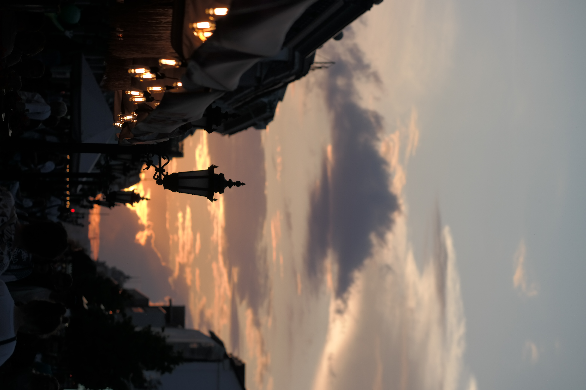
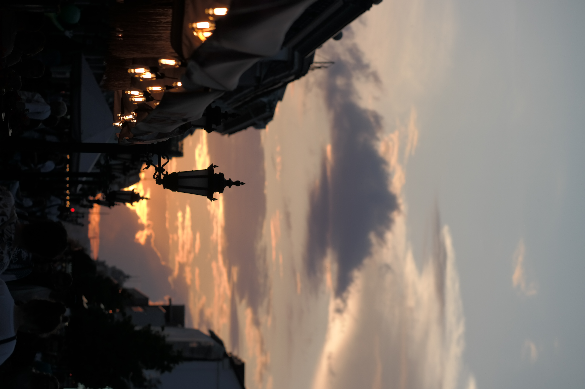

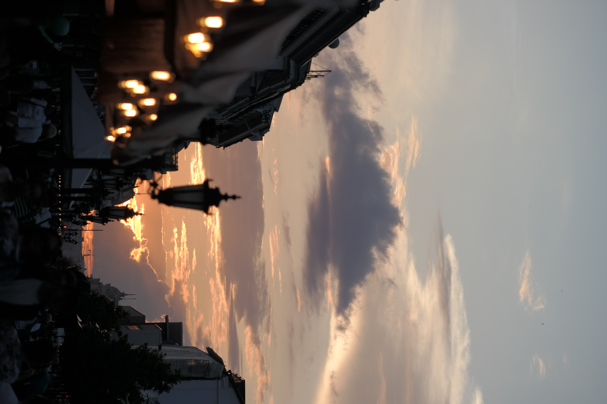
 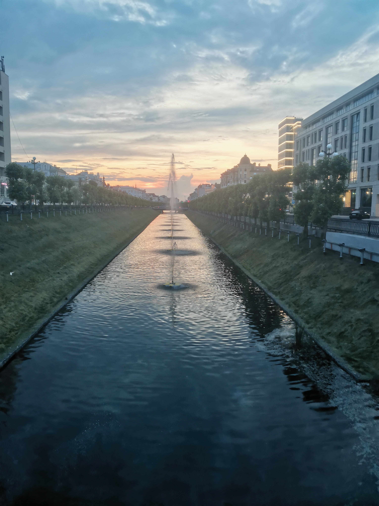
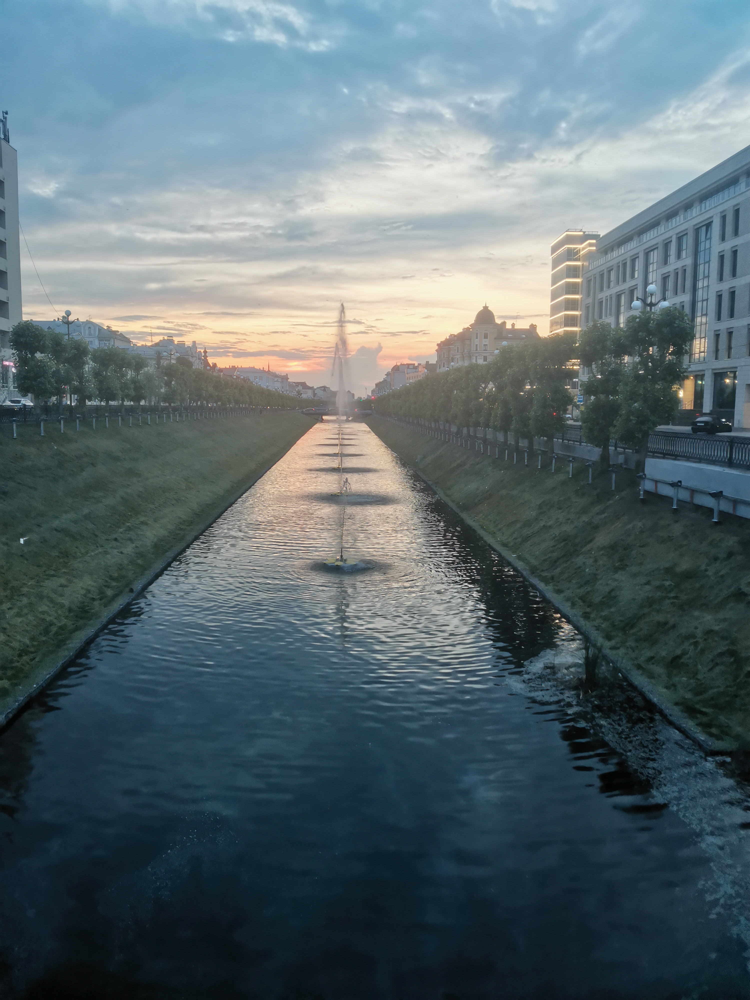


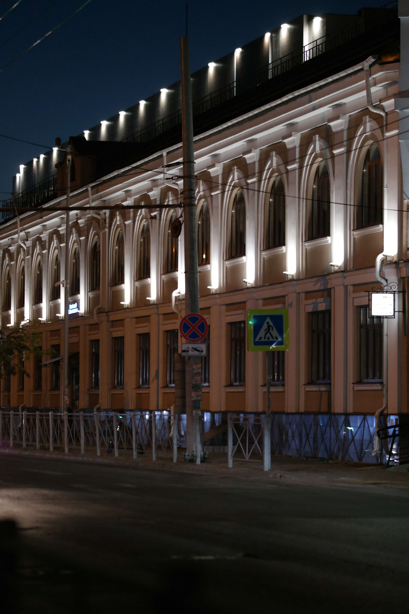